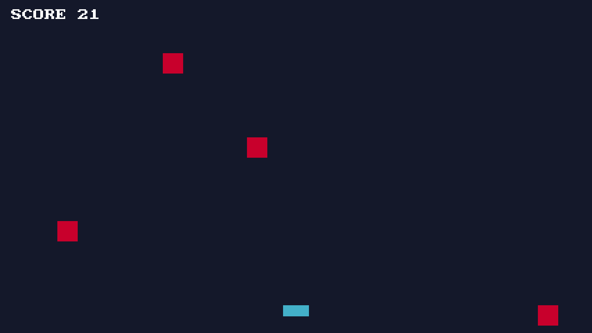

動作環境
| 対応OS | Windows 10 / 11（x64） |
| 言語 | C++20 |
| 画面(UI) | HTML / CSS（CEF）またはC++から直接描画 |
| ライセンス | 独自ライセンス（使用は自由 / 改変・再配布は不可） |
| 入手 | installer.exe / zip ・ GitHub Releases |
コードで見る
状態をstructに置いて、updateとdrawを書くだけ。mitiru runですぐ動きます。
// 矢印キーで動かすだけのゲーム struct MyGame { float x = 600, y = 360; void update(Input in, float dt) { if (in.down(Key::Right)) x += 320 * dt; if (in.down(Key::Left)) x -= 320 * dt; } void draw(Screen& s) { s.fillCircle(x, y, 24, color::Cyan); } }; MITIRU_GAME(MyGame)

# 作って、動かす
mitiru new my-game
cd my-game
mitiru run
なぜMitiruEngine?
- ソース公開・使うのは自由。 ゲーム作りに自由に使えて（商用も可）、中身も読めます。ただしエンジン本体の改変・再配布は不可。
- 軽量で、すぐ動く。 ゲーム本体はDLL 1個（約0.2 MB）。
mitiru new→mitiru runで起動します。 - HTML / CSSでUIが書ける。 メニューやHUDをWebページと同じ書き方で。手書きJavaScriptは不要。画面を作る →
- 巻き戻し・録画・AI観測がついてくる。 状態を丸ごとコピーできる1個のstruct（flat POD）に置くだけで、同じ仕組みからまとめて。くわしく →
- 必要なものだけ。 巨大なエディタは開きません。道具は1つにつき1ウィンドウ。道具を見る →
- 決定論 +リプレイ。 同じ入力なら必ず同じ結果。録画がそのまま回帰テストになります。
何が作れる
- 2Dゲーム：アクション・パズル・ノベルなど。スプライトやタイルマップを扱えます。
- 3D表示：glTFモデルの読み込みと表示。
- プロトタイプ / ゲームジャム：速い起動とホットリロードで、思いついたものをすぐ試せます。
- プログラミング学習：C++で「動くもの」をすぐ作れる、教材としても。
- ツール / ビジュアライザ：HTML / CSSのUIとC++のロジックを組み合わせて。
同梱のデモrewindで、巻き戻し・AI観測の挙動を実際に触れます。